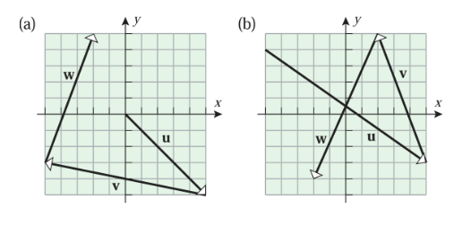
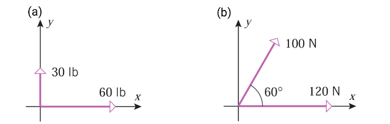

A(1, -1, 1) to:B(2, 0, -3)(a) Distance to B(2, 0, -3):
Use the 3D distance formula: d = √[(x₂ - x₁)² + (y₂ - y₁)² + (z₂ - z₁)²]
d = √[(2 - 1)² + (0 - (-1))² + (-3 - 1)²]
d = √[(1)² + (1)² + (-4)²]
d = √[1 + 1 + 16] = √18 = 3√2
(b) Distance to the xy-plane:
The distance from a point (x, y, z) to the xy-plane is simply the absolute value of its z-coordinate, |z|.
For point A(1, -1, 1), the z-coordinate is 1.
Distance = |1| = 1
(c) Distance to the z-axis:
The distance from a point (x, y, z) to the z-axis is the distance to the point (0, 0, z) on the axis. This is given by the formula √(x² + y²).
For point A(1, -1, 1):
Distance = √[(1)² + (-1)²] = √[1 + 1] = √2
y² + z² = 4x² + y² + z² + 4x - 6y + 8z - 7 = 0
(a) Identify y² + z² = 4:
Since the variable x is missing, this equation represents a cylindrical surface.
In the yz-plane, y² + z² = 4 is a circle of radius 2 centered at the origin.
Sketch instructions: Draw a circle of radius 2 in the yz-plane, and extend it infinitely along the x-axis to form a right circular cylinder.
(b) Identify x² + y² + z² + 4x - 6y + 8z - 7 = 0:
We need to complete the square for x, y, and z to find the standard form.
Group terms: (x² + 4x) + (y² - 6y) + (z² + 8z) = 7
Complete the squares by adding (b/2)² to both sides:
(x² + 4x + 4) + (y² - 6y + 9) + (z² + 8z + 16) = 7 + 4 + 9 + 16
(x + 2)² + (y - 3)² + (z + 4)² = 36
This is the standard equation of a sphere.
Sketch instructions: The sphere has its center at C(-2, 3, -4) and a radius of r = √36 = 6.
u = P₁P₂, where P₁ = (2, -1, 3) and P₂ = (1, 2, -1).
To find the vector from P₁ to P₂, we subtract the coordinates of the initial point (P₁) from the terminal point (P₂).
u = <x₂ - x₁, y₂ - y₁, z₂ - z₁>
u = <1 - 2, 2 - (-1), -1 - 3>
u = <-1, 3, -4>
Answer: u = -i + 3j - 4k or <-1, 3, -4>
u = i - j is a vector.u.u makes with the positive x-axis.
(a) Unit vectors parallel to u:
First, find the magnitude of u = <1, -1>:
||u|| = √[(1)² + (-1)²] = √2
To find unit vectors parallel to u, divide u by its magnitude. Since it asks for "vectors" (plural) parallel to it, we must include both the same direction and the opposite direction.
Unit vectors = ±(u / ||u||) = ±(1/√2)i - (1/√2)j
Answer (a): <1/√2, -1/√2> and <-1/√2, 1/√2>
(b) Angle with positive x-axis:
Using the formula cos(θ) = u_x / ||u||:
cos(θ) = 1 / √2
Since the y-component is negative (u_y = -1), the vector is in the 4th quadrant.
θ = 360° - 45° = 315° (or -45° or 7π/4 radians).
u + v + w and express it in component form.
Note: We find the components of the resultant vector by reading the horizontal (x) and vertical (y) displacements of each vector from the grid, where vectors are placed tip-to-tail.
Part (a):
u moves 3 units right, 2 units down: u = <3, -2>v moves 4 units left, 1 unit up: v = <-4, 1>w moves 0 units right, 3 units up: w = <0, 3>u + v + w = <3 - 4 + 0, -2 + 1 + 3> = <-1, 2>
Part (b):
u moves 3 units left, 2 units down: u = <-3, -2>v moves 1 unit right, 4 units down: v = <1, -4>w moves 1 unit left, 2 units up: w = <-1, 2>u + v + w = <-3 + 1 - 1, -2 - 4 + 2> = <-3, -4>
u of length 3 which:π/6 with the x-axis.v = 2i - j - 3k.
(a) Angle of π/6 with x-axis:
For a 2D vector, the components are given by <||u||cos(θ), ||u||sin(θ)>.
u = <3 cos(π/6), 3 sin(π/6)>
u = <3(√3/2), 3(1/2)>
Answer (a): u = <(3√3)/2, 3/2>
(b) Parallel to v = 2i - j - 3k:
First, find the unit vector in the direction of v.
||v|| = √[(2)² + (-1)² + (-3)²] = √[4 + 1 + 9] = √14
Unit vector v̂ = <2/√14, -1/√14, -3/√14>
To get a vector of length 3 parallel to v, multiply the unit vector by ±3 (since parallel vectors can point in the same or opposite direction).
Answer (b): u = ±<6/√14, -3/√14, -9/√14>
u = 3i + 6j - 2k and v = -i + 5k are two vectors. Find the components of the following vectors:u - 3v2v - 5u
Write the vectors in component form: u = <3, 6, -2> and v = <-1, 0, 5>.
(a) Find u - 3v:
3v = 3<-1, 0, 5> = <-3, 0, 15>
u - 3v = <3, 6, -2> - <-3, 0, 15>
u - 3v = <3 - (-3), 6 - 0, -2 - 15>
Answer (a): <6, 6, -17>
(b) Find 2v - 5u:
2v = 2<-1, 0, 5> = <-2, 0, 10>
5u = 5<3, 6, -2> = <15, 30, -10>
2v - 5u = <-2, 0, 10> - <15, 30, -10>
2v - 5u = <-2 - 15, 0 - 30, 10 - (-10)>
Answer (b): <-17, -30, 20>

Diagram (a): F₁ is 60 lb along the positive x-axis, and F₂ is 30 lb along the positive y-axis.
F₁ = <60, 0>
F₂ = <0, 30>
Resultant R = F₁ + F₂ = <60, 30>
Magnitude ||R|| = √[60² + 30²] = √[3600 + 900] = √4500 = 30√5 lb (approx. 67.08 lb).
Angle θ = tan⁻¹(30/60) = tan⁻¹(0.5) ≈ 26.57°
Diagram (b): F₁ is 120 N along the positive x-axis, and F₂ is 100 N at an angle of 60°.
F₁ = <120, 0>
F₂ = <100 cos(60°), 100 sin(60°)> = <100(1/2), 100(√3/2)> = <50, 50√3>
Resultant R = F₁ + F₂ = <120 + 50, 0 + 50√3> = <170, 50√3>
Magnitude ||R|| = √[170² + (50√3)²] = √[28900 + 7500] = √36400 = 20√91 N (approx. 190.79 N).
Angle θ = tan⁻¹((50√3) / 170) = tan⁻¹((5√3) / 17) ≈ 27.0°